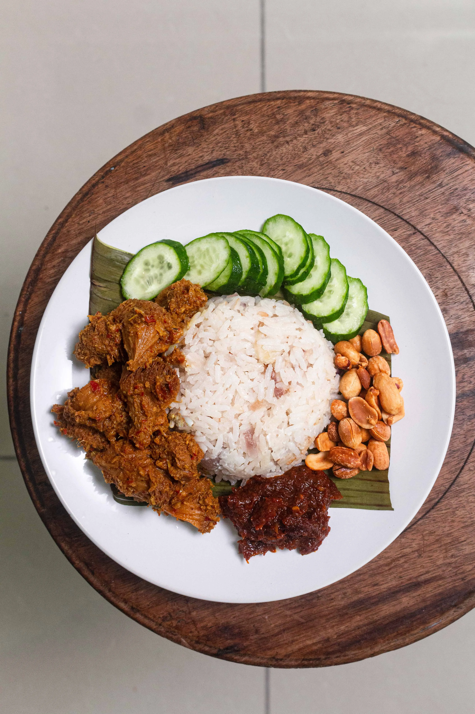

Nasi Lemak

Description
Nasi lemak is a dish originating in Malay cuisine that consists of fragrant rice cooked in coconut milk and pandan leaf.
Ingredients
- 1.5 cups white rice
- 1/2 cup coconut milk
- 2 cups water
- 5 pandan leaves, tied into a knot
- 1 lemongrass stalk
- 1 red onion, roughly chopped
- 20 dried chilis (up to 25, if you'd like)
- 1/4 cup hot water (for soaking)
- 3 cloves garlic
- 1 tablespoon tamarind paste
- 1 tablespoon palm sugar (or brown sugar)
- 1/4 teaspoon fine sea salt
- 1 teaspoon gochugaru, or red chili flakes
- 1 sheet nori (dried seaweed), roughly torn
- 1 tablespoon doubanjiang
- 2 teaspoons light brown miso
- 3 tablespoons vegetable oil
- 1 cucumber, thinly sliced
- 1/4 cup roasted peanuts
- 100 grams fried tofu, cubed
- 1 piece fried tofu pouch
- Crispy fried shallots
Steps
- Prepare the Coconut Rice: Rinse rise as per usual and drain well. Add rice into rice cooker (or large saucepan), followed by coconut milk, water, pandan leaves, lemongrass stalk, and garlic cloves. Cook the rice covered until all liquid evaporates and all the grains are tender & fluffy.
- Prepare the Sambal: First, soak dried chilis in boiling hot water for 10 minutes. Drain the chilis and remove the seeds (keep a few seeds for flavor & extra spice). Add chilis and all the sambal ingredients except for the vegetable oil into a food processor, and process until smooth. Heat 3 tablespoons of oil in a pan on medium heat. Add the paste and fry until fragrant. Taste and adjust seasoning to finish.
- Prepare Toppings: Assemble a plate with roasted peanuts, crispy shallots, thinly sliced cucumber, your choice of egg replacer (I used abura-age that’s lightly simmered and seasoned with black salt), and your choice of protein (I used fried tofu cubes). Serve on banana leaf for the most authentic presentation (if you have any).